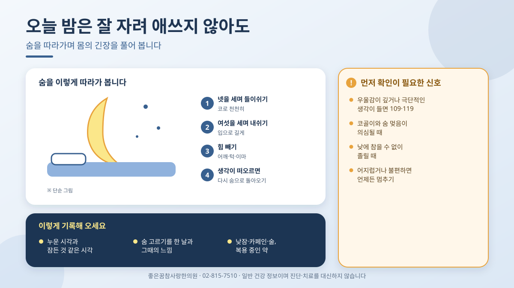
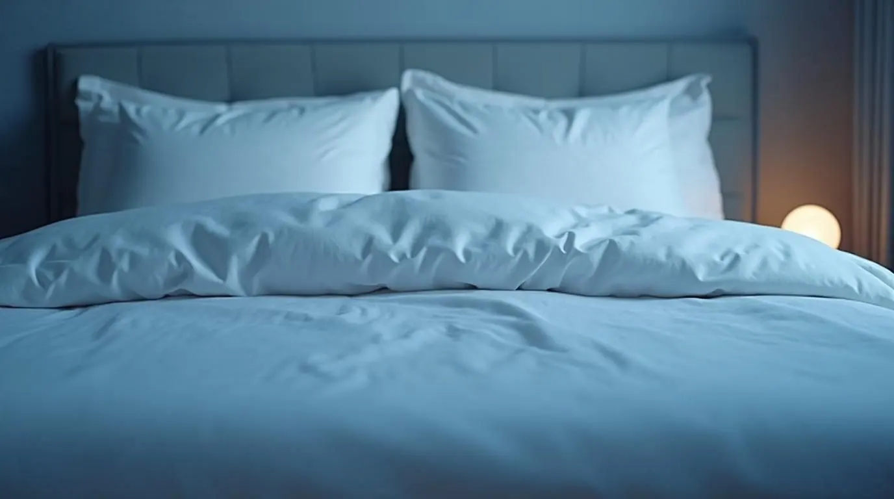

잠은 애쓸수록 멀어질 수 있어, 오늘 밤은 잘 자려는 마음을 내려놓고 숨을 따라가며 몸의 긴장을 풀어 보는 짧은 글입니다. 치료를 대신하지 않으며, 잠 못 드는 밤이 몇 주째 이어지거나 우울감이 깊으면 진료를 권합니다.
여쭙는 것
- 잠들기까지 보통 얼마나 걸리나요? 중간에 깨나요?
- 누웠을 때 머릿속에 어떤 생각이 맴도나요?
- 낮에 졸리거나 기운이 없나요?
생활에서 해 볼 것
- 20분 넘게 잠이 오지 않으면 잠깐 일어나 조용한 불빛 아래서 쉬었다가 졸릴 때 다…
- 시계는 보이지 않는 곳에 돌려 두기
- 잠자리에 들기 한 시간 전부터 휴대폰을 멀리 두기
한의원에서 함께 살필 것
- 몇 주째 잠들기 어렵고 낮의 생활이 흔들리는 경우
- 잠자리에서 가슴 답답함이나 두근거림이 함께 오는 경우
- 몸이 늘 긴장되어 어깨와 목이 굳어 있는 경우
먼저 확인이 필요한 신호
- 우울감이 깊거나 극단적인 생각이 드는 경우(정신건강 위기상담 전화 109)
- 코골이와 숨 멎음이 의심되는 경우
- 낮에 참을 수 없이 졸린 경우

이 글은 자기 전에 천천히 읽는 글입니다. 읽다가 졸리면 그대로 주무셔도 됩니다. 아래쪽에는 잠 못 드는 밤이 길어질 때 살펴볼 점을 따로 정리해 두었으니, 낮에 읽으셔도 좋습니다.
오늘 하루는 끝났습니다
오늘 못 한 일은 내일의 몫으로 남겨 두어도 됩니다. 지금은 아무것도 해결하지 않으셔도 됩니다.

잘 자려고 하지 않으셔도 됩니다
잠은 노력해서 얻는 것이 아니라 몸이 스스로 찾아오는 것입니다. 오늘은 눈을 감고 그저 누워 있기만 해도 몸은 쉬고 있습니다.
숨을 따라가 보세요
- 코로 천천히 들이쉬며 속으로 넷을 셉니다.
- 입으로 길게 내쉬며 속으로 여섯을 셉니다.
- 어깨, 턱, 이마의 힘이 조금씩 빠지는 것을 느껴 보세요.
- 생각이 떠오르면 "아, 생각이 떠올랐네" 하고 다시 숨으로 돌아오세요.
어지럽거나 불편하면 언제든 멈추고 편하게 숨 쉬세요.
몸을 발끝부터 내려놓아 보세요
- 발바닥과 발뒤꿈치가 이불에 닿아 있는 느낌을 가만히 느껴 봅니다.
- 종아리와 무릎, 허벅지가 바닥 쪽으로 조금씩 무거워진다고 생각해 봅니다.
- 허리와 등이 매트리스에 기대어 있는 것을 느끼고, 배가 숨에 따라 오르내리는 것을 지켜봅니다.
- 손가락을 살짝 오므렸다가 천천히 펴 봅니다.
- 마지막으로 눈가와 미간, 혀끝에 남은 힘을 놓아 봅니다.
순서를 잊어도 괜찮습니다. 어디까지 했는지 모르겠다면, 그 사이 몸은 이미 조금 내려앉아 있는 것입니다.
생각이 자꾸 떠오르는 밤이라면
머리맡에 작은 종이와 연필을 두고, 마음에 걸리는 일을 한 줄씩 적어 두셔도 됩니다. 적어 둔 일은 내일 아침의 내가 다시 펼쳐 볼 것입니다. 지금은 종이에 맡겨 두고 숨으로 돌아오면 됩니다. 화면 불빛은 눈을 깨우기 쉬우니, 이 시간에는 종이를 쓰시길 권합니다.
여기부터는 잠 못 드는 밤이 길어질 때, 낮에 읽어 보시면 좋은 내용입니다.

왜 애쓸수록 잠이 멀어질까요
잠이 안 오는 밤이 길어지는 데에는 몇 가지 흐름이 있습니다.
- 잠을 잘 자야 한다는 마음이 클수록 몸이 긴장해 오히려 잠이 멀어질 수 있습니다.
- 시계를 자주 보면 "벌써 몇 시"라는 생각이 또 다른 걱정이 됩니다.
- 낮의 긴장과 늦은 화면, 카페인이 몸을 깨어 있게 하는 경우가 있습니다.
- 통증, 밤 소변, 속 불편처럼 몸의 신호가 잠을 깨우기도 합니다.
자주 하는 오해
- 8시간을 꼭 채워야 한다고 여기기 쉽지만, 필요한 잠의 길이는 사람마다 다르고 아침에 어떻게 일어나는지가 더 중요한 단서입니다.
- 누워서 잠이 안 오면 시간을 버린다고 생각하기 쉽지만, 눈을 감고 쉬는 동안에도 몸은 긴장을 내려놓고 있습니다. 다만 20분 넘게 뒤척인다면 잠깐 일어나는 편이 낫습니다.
- 주말에 몰아서 자면 괜찮다고 여기기 쉽지만, 늦게 일어난 다음 날 밤에는 오히려 잠들기 어려워질 수 있습니다.
- 잠 못 드는 밤에 술 한 잔이 도움이 된다고 생각하기 쉽지만, 술은 잠을 얕게 하고 새벽에 깨게 할 수 있습니다.

예를 들면 이런 경우입니다
- 예를 들어 퇴근 뒤에도 업무 메시지를 확인하다 잠자리에 드는 직장인이라면, 잠들기 한 시간 전에 휴대폰을 다른 방에 두고 이 글의 숨 고르기를 해 보는 것부터 시작해 볼 수 있습니다.
- 예를 들어 누우면 공부할 내용이 머릿속을 맴도는 수험생이라면, 머리맡 종이에 내일 할 일을 세 줄로 적어 두고 눕는 방법을 함께 써 볼 수 있습니다.
- 예를 들어 아이를 재우고 나서야 내 시간이 생겨 늦게까지 깨어 있는 육아 중인 분이라면, 짧은 쉼은 잠자리 밖에서 갖고 정해 둔 시각에 눕는 연습을 해 볼 수 있습니다.
스스로 점검해 보세요
- 잠들기까지 30분 넘게 걸리는 밤이 일주일에 세 번 이상이다
- 누우면 걱정이나 내일 할 일이 계속 떠오른다
- 잠자리에서 휴대폰을 30분 넘게 본다
- 밤중에 시계를 자주 확인한다
- 오후 늦게 커피나 에너지 음료를 마신다
- 아침에 일어나는 시각이 날마다 1시간 넘게 달라진다
- 낮에 졸리거나 집중이 어려워 일과 공부에 지장이 있다
여러 항목에 해당하고 몇 주째 이어진다면, 진료 때 이 목록을 그대로 말씀해 주셔도 상담이 쉬워집니다.

먼저 이렇게 여쭙니다
잠 못 드는 밤이 이어져 진료를 받으신다면 이런 것을 여쭙니다.
- 잠들기까지 보통 얼마나 걸리나요? 중간에 깨나요?
- 누웠을 때 머릿속에 어떤 생각이 맴도나요?
- 낮에 졸리거나 기운이 없나요?
- 복용 중인 수면제나 다른 약이 있나요?
일상에서 먼저 해 볼 수 있는 것
- 20분 넘게 잠이 오지 않으면 잠깐 일어나 조용한 불빛 아래서 쉬었다가 졸릴 때 다시 눕기
- 시계는 보이지 않는 곳에 돌려 두기
- 잠자리에 들기 한 시간 전부터 휴대폰을 멀리 두기
- 아침에 일어나는 시각만큼은 매일 비슷하게 지키기
이 글의 방법은 긴장을 푸는 데 도움이 될 수 있는 일반적인 안내이며 치료를 대신하지 않습니다.

한의원에서 함께 살필 수 있는 경우
- 몇 주째 잠들기 어렵고 낮의 생활이 흔들리는 경우
- 잠자리에서 가슴 답답함이나 두근거림이 함께 오는 경우
- 몸이 늘 긴장되어 어깨와 목이 굳어 있는 경우
좋은꿈참사랑한의원에서는 먼저 잠의 모습을 충분히 듣고, 진맥을 기본으로 하고 필요하다고 판단될 때 설진·복진을 더해 몸 상태를 살핀 뒤 침이나 한약 상담 등 맞는 방법을 함께 정합니다. 귀가 전에는 오늘 밤 해 볼 한 가지를 함께 정해 드립니다.
첫 방문에는 잠들기까지 걸리는 시간, 밤에 깨는 때, 누웠을 때 떠오르는 생각, 낮의 기운을 먼저 여쭙니다. 이어서 진맥을 짚고 혀와 배를 살펴 몸의 긴장과 소화 상태를 확인하며, 필요하다고 판단될 때 원내 장비로 몸 상태를 함께 봅니다. 가져오신 수면 기록이나 생활 메모가 있으면 같이 펼쳐 보고, 지금 잠을 흔드는 것이 긴장인지, 소화나 몸의 온기인지, 생활 리듬인지 설명드린 뒤 치료 방향을 함께 정합니다. 다시 오시면 그 사이의 밤이 어땠는지부터 이어서 여쭙습니다.
얼마나 지켜보고, 언제 상담하면 좋을까요
- 잠 못 드는 밤이 며칠 이어지는 것은 누구에게나 있을 수 있어, 1~2주는 일어나는 시각을 일정하게 지키며 지켜보세요.
- 일주일에 세 번 이상 잠들기 어려운 날이 3~4주 넘게 이어지거나, 낮의 일과 공부가 흔들린다면 진료를 받아 보시길 권합니다.
- 극단적인 생각이 들거나 며칠째 거의 자지 못해 일상을 이어가기 어렵다면 기다리지 말고 바로 도움을 요청하세요.

이렇게 기록해 오시면 상담이 쉬워집니다
- 일주일 동안 누운 시각과 잠든 것 같은 시각
- 머리맡 종이에 적어 둔 걱정이 주로 어떤 것이었는지
- 이 글의 숨 고르기를 해 본 날과 그때의 느낌
- 낮잠, 카페인, 술
- 복용 중인 약
이런 증상은 먼저 확인이 필요합니다
- 우울감이 깊거나 극단적인 생각이 드는 경우(정신건강 위기상담 전화 109)
- 코골이와 숨 멎음이 의심되는 경우
- 낮에 참을 수 없이 졸린 경우
복용 중인 수면제나 신경안정제는 처방한 의사와 상의 없이 줄이거나 끊지 않습니다.

함께 읽으면 좋은 글
- 자기 전 30분은 어떻게 보내면 좋을까요?
- 밤에 자꾸 시계를 보게 될 때는 어떻게 하나요?
- 걱정이 많아서 잠이 안 올 때는 어떻게 살피나요?
한눈에 보는 표
| 구분 | 핵심 |
|---|---|
| 여쭙는 것 | 잠들기까지 보통 얼마나 걸리나요? 중간에 깨나요? 누웠을 때 머릿속에 어떤 생각이 맴도나요? |
| 생활에서 해 볼 것 | 20분 넘게 잠이 오지 않으면 잠깐 일어나 조용한 불빛 아래서 쉬었다가 졸릴 때 다시 눕기 시계는 보이지 않는 곳에 돌려 두기 |
| 한의원에서 함께 살필 것 | 몇 주째 잠들기 어렵고 낮의 생활이 흔들리는 경우 잠자리에서 가슴 답답함이나 두근거림이 함께 오는 경우 |
| 먼저 확인이 필요한 신호 | 우울감이 깊거나 극단적인 생각이 드는 경우(정신건강 위기상담 전화 109) 코골이와 숨 멎음이 의심되는 경우 |
자주 묻는 질문
이 글을 읽으면 잠이 오나요?
결과를 약속하지 않습니다. 긴장을 푸는 데 도움이 될 수 있는 일반적인 안내입니다.
숨 고르기는 매일 해도 되나요?
네, 부담 없이 하셔도 됩니다. 어지럽거나 불편하면 멈추고 편하게 숨 쉬세요.
오래 잠을 못 자면 어떻게 하나요?
몇 주 넘게 이어지거나 낮의 생활이 어려우면 진료를 받아 보세요. 우울감이 깊다면 정신건강의학과 진료를 먼저 권합니다.
읽다가 오히려 잠이 깨면 어떻게 하나요?
괜찮습니다. 글은 덮어 두고 조용한 불빛 아래 잠시 앉아 있다가, 졸음이 오면 다시 누우세요.
이 글은 일반적인 건강 정보이며 개인의 진단이나 치료를 대신하지 않습니다. 증상이 있거나 복용 중인 약이 있다면 진료를 통해 확인하세요. 치료 효과는 개인마다 다를 수 있습니다.
작성 기준: 일반적으로 알려져 있는 건강 정보를 참고해 정리했습니다(대표원장 감수). 증상 기록은 1~2주 동안 하루 1회, 비슷한 시간에 적어 오시면 지난 상태와 비교하기 쉽습니다.
좋은꿈참사랑한의원은 재진 때 지난번 이야기부터 이어서 여쭙니다. 진료시간과 예약은 오시는 길에서 확인하세요.
어디서 상담받을 수 있나요?
좋은꿈참사랑한의원은 서울 동작구 만양로2길 2 신성빌딩 3층·5층(서울 동작구 상도동, 7호선 상도역 3번 출구 근처)에 있습니다. 한의사 3명(이종호 대표원장, 조영기 수석진료원장, 정원영 진료원장)이 진료합니다. 진료시간은 평일 09:30~20:00(점심 13:00~14:00), 토·일·공휴일 09:30~15:00이며, 방문 전 전화로 확인을 권합니다. 예약은 네이버 예약, 카카오톡 상담, 전화 02-815-7510로 받습니다.